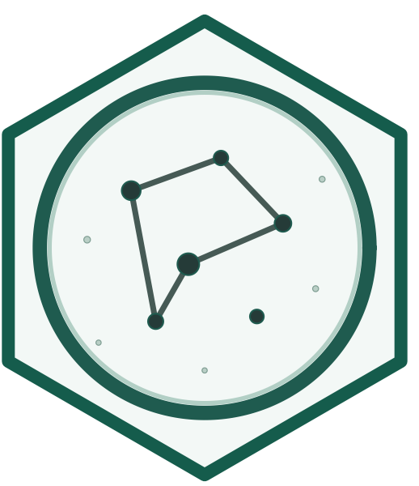

lifesimulatoR is an educational R package for exploring origin-of-life concepts through simplified computational simulations.
🧪 Status: Educational research package in active development.
The package provides tools for studying molecular evolution, mutation, selection, diversity, protocell dynamics, autocatalytic networks, and emergent complexity in toy prebiotic systems. It is designed for students, instructors, science communicators, and researchers interested in computational approaches to abiogenesis and early evolution.
Companion Book
A theory-rich companion book is available online:
📖 Online Book: https://noushinn.github.io/lifesimulatoR-book/
📚 Book Repository: https://github.com/NoushinN/lifesimulatoR-book
The companion book provides:
- Scientific background on origin-of-life research
- Explanations of major abiogenesis theories
- Conceptual models behind package functions
- Detailed examples and tutorials
- Interpretation of simulation results
- Classroom exercises and discussion questions
- Suggested readings from the scientific literature
The package and book are designed to be used together, with the book providing the theoretical context and the package providing hands-on computational exploration.
Scientific Motivation
One of the most important open questions in science is:
How did life emerge from non-living matter?
Researchers have proposed many possible pathways, including:
- RNA World
- Metabolism First
- Protocell First
- Autocatalytic Set Theory
- Systems Chemistry Approaches
- Hybrid Models
lifesimulatoR provides simplified computational models that allow users to explore the mechanisms often discussed within these frameworks.
The package is intentionally hypothesis-neutral and is designed as a conceptual and educational tool rather than a chemically realistic reconstruction of abiogenesis.
Main Features
Molecular Evolution
- Generate symbolic molecular populations
- Simulate replication and inheritance
- Explore mutation and selection dynamics
- Investigate evolutionary trajectories
Diversity and Complexity
- Compute Shannon entropy
- Measure population diversity
- Explore information and complexity concepts
- Track changes through time
Protocells
- Simulate compartment growth
- Explore leakage and resource retention
- Model protocell division dynamics
- Investigate compartment-based selection
Installation
if (!requireNamespace("remotes", quietly = TRUE)) {
install.packages("remotes")
}
remotes::install_github("NoushinN/lifesimulatoR")Quick Example
library(lifesimulatoR)
sim <- simulate_abiogenesis(
n_molecules = 100,
generations = 100,
mutation_rate = 0.02,
selection_strength = 1,
seed = 123
)
head(sim)
plot_simulation(
sim,
x = "generation",
y = "mean_fitness"
)Learning Path
New users are encouraged to follow this progression:
- Read the companion book introduction.
- Work through the Getting Started vignette.
- Explore Molecular Evolution.
- Study Diversity and Complexity metrics.
- Investigate Protocell simulations.
- Explore Autocatalytic Networks.
- Compare alternative origin-of-life hypotheses.
Educational Scope
The models implemented in lifesimulatoR are intentionally simplified and should be viewed as conceptual teaching and learning tools.
They are designed to help users explore mechanisms frequently discussed in origin-of-life research, including:
- Variation
- Replication
- Mutation
- Selection
- Diversity
- Compartmentalization
- Autocatalysis
- Emergence
Simulation results should not be interpreted as evidence for specific historical pathways leading to life on Earth.
Citation
If you use lifesimulatoR in teaching, presentations, or publications, please cite the package using:
citation("lifesimulatoR")